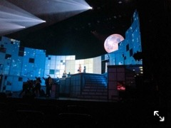

気づいたら もう 明るかった
いかがお過ごしでしょうか？
お昼は暖かいかと思えば
夜は肌寒くなったり、
気温の変化が激しく服が難しい、、ですね
いろんなお洋服着て
早くお出かけしたいなあ。
あのシャツにあのパンツ合わせてみよう！とか
あの色の組み合わせしてみよう〜とか、
お家で色々考えるのが楽しいです☀︎
初表紙を務めさせていただきました
「with」発売になりました！
嬉しいです、、
撮影もかなり楽しくて☀︎
海に行ったり花火したりスイカも食べたり。
ひと足お先に夏を満喫したのですよ。
形になって改めて実感が湧き、、嬉しさが込み上げてきました。
ふう。幸せです。
いっぱい、幸せを感じます、噛み締めます。
withモデルとしてもっともっと
必要として頂けるよう精進して参ります！
ゆいさんと❤︎
ぜひチェックしてください！
少しでも多くの方の手元に届きますように。
観進めているドラマの先が気になり
一気観したくなるのですが、、
その衝動をなんとか抑え
終わってほしくないので少しずつ、少しずつ観ています。性格がでますね
先日一つのドラマの最終回を観終わりました〜終わってしまった寂しさ。
しばらく余韻から抜け出せなさそう。
映画やドラマのお供はカフェラテ☀︎
最近更にすごく好きになりました。
最近はスイートポテトだったり
ガトーショコラだったり、
時間がある時に作ったりしています☀︎
ガトーショコラはグルテンフリー︎︎︎︎✌︎
気持ち程度に気を遣いつつ、、
大好きなお取り寄せしたチーズケーキも
あるのです、、幸せいっぱい、、
限られた時間の中でも、
小さな幸せをたくさん見つけたいですね☀︎
昔聴いていた音楽を思い返し
また再ダウンロードしてプレイリストを作り
朝から聴いてみたり、、
振り返るの楽しい☀︎
皆さんにとって懐かしい曲など、
ありますか？
大好きで、たくさんお世話になった先輩。
あの時期、何度もみんな一緒に朝を迎えて
お家にもお邪魔して何度も一緒にご飯を食べて
みんなで悩みながら毎日過ごして
日々一緒に戦って。
たくさんのありがとうございますを、
伝えたい方です。
あの強い眼差しに何度も心動かされ、
何度あの笑顔に、癒されたことか。
755でも書いてくださってたのだけど
バスラの時、言ってくださった言葉があって
それがとても嬉しかったの。
それを胸に私も日々頑張ろうと思います！

ステージに立つ井上さんは
いつだって、どんなときだってかっこいい！
卒業、おめでとうございます！
本当にお疲れ様でした。
告知◎
▽５／２ 「日経エンタテインメント！」
▽５／７ 「anan」
▽５／１１ 「週刊スピリッツ」
◎TVドラマ 「映像研には手を出すな！」
放送中です！
※地域によって放送日時など変わっておりますのでホームページを覗いて見てくださいませ。
乃木坂46がMTVのプロジェクト
#AloneTogether に参加させて頂いております！
個性様々でとても好きです。
私が選ばせて頂いた曲は
向井太一さんの「Blue」です！
私の中のプレイリストの一曲。
朝から聴くのも良し、散歩の時のお供でも良し、ストレッチ時間のBGMにしても良し、寝る前に流すリラックスタイムでも良し、、
みんなで同じ気分を味わえたらなあと思います！
そしてそして！
本日 25時〜放送の 乃木坂46のANNに
出演させて頂きます！
うわ〜楽しみ〜！！！
皆様一緒に夜更かししましょう❤︎
たくさんばーっと書いてしまいましたが。
また更新します。
おやすみなさい。
では〜
だったら、してれば、
そんな言葉思い浮かばないくらいの人生を歩みたいものです( '-' )
過去の写真を見返し思い出を振り返っては
全部ぎゅっと抱きしめたくなるくらいに素敵な思い出達ばかり☀︎
そんな中にある小さな反省が
より濃く強くはっきり残してくれているようです〜
Original：https://www.nogizaka46.com/s/n46/diary/detail/56062?ima=4938&cd=MEMBER